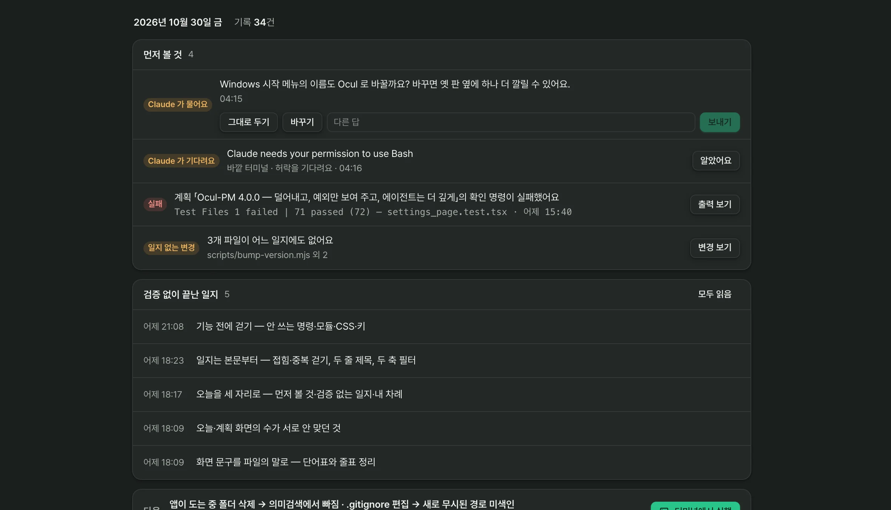
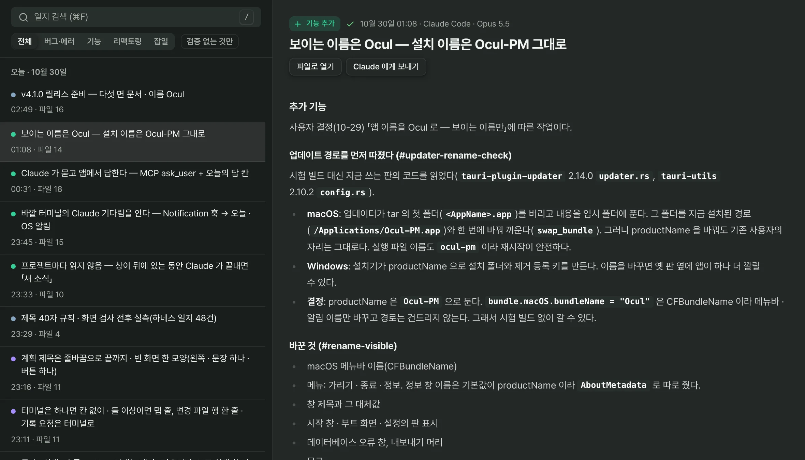
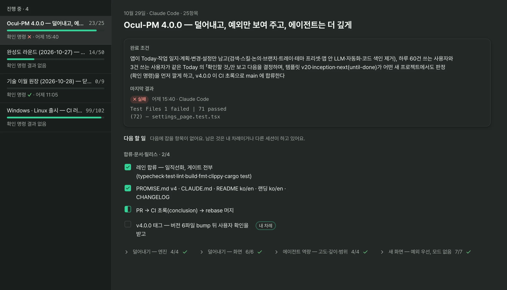
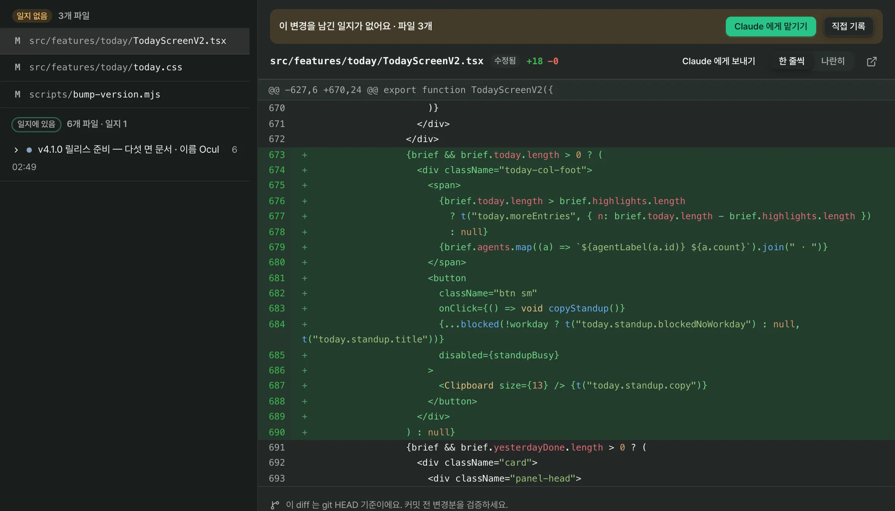
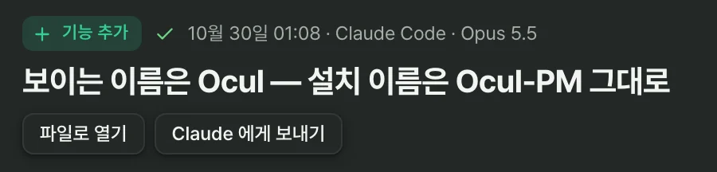
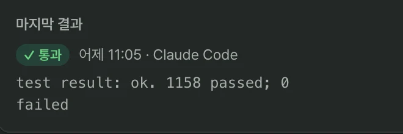

「다 됐습니다」 대신, 영수증을 받으세요.
Claude Code · Codex 가 「다 됐다」고 한 일을, 무엇을 바꿨고 어떤 명령으로 확인했는지로 3분 안에 믿거나 반박합니다. 확인 안 된 것만 당신 앞에 섭니다.
Windows · Linux 는 베타 Windows x64 Linux AppImage Linux .deb
새 판 v4.13.2 — 터미널의 그림 미리보기가 버벅이지 않습니다
답을 보냈어요:그대로 두기


➜ ai-pm git:(main) claude "$OCULPM_PROMPT"
✻ Welcome to Claude Code
> 계획 ocul-next 의 다음 항목: 보이는 이름은 Ocul — 설치 이름은 그대로
⏺ 메뉴 · 창 제목 · 문구 14곳을 고쳤어요. 설치 이름(productName)은 그대로 둡니다.
⏺ Bash(pnpm test && cargo test --locked)
⎿ Tests 944 passed · test result: ok. 1153 passed
⏺ oculpm - ask_user (MCP)(question: "Windows 시작 메뉴의 이름도 Ocul 로 바꿀까요?")
⎿ Ocul 의 오늘 화면에서 답을 기다리는 중…
⎿ answer: "그대로 두기" (Ocul 오늘 화면에서)
⏺ 알겠어요. Windows 시작 메뉴 이름은 Ocul-PM 그대로 둡니다.
⏺ oculpm - journal_write (MCP)(title: "보이는 이름은 Ocul — 설치 이름은 그대로")
⏺ oculpm - plan_update (MCP)(rename-visible → done, "판정 ✓ Tests 944 passed")
Windows 시작 메뉴의 이름도 Ocul 로 바꿀까요? 바꾸면 옛 판 옆에 하나 더 깔릴 수 있어요.
답을 누르면 위 창의 터미널에서 Claude 가 그 답을 받습니다.
답을 보냈어요: 그대로 두기. 위 창의 터미널에서 이어집니다.
오늘사람이 볼 것만 위로 올라옵니다. Claude 의 질문과 기다림, 실패한 확인 명령, 일지 없는 변경.실제 앱 화면 · 이 저장소의 일지로 채운 데모
어제를 다시 설명하지 않는 하루.
기능 목록보다 이 왕복 하나가 이 앱의 전부입니다. 평소 쓰는 프로젝트에서 그대로 해 보세요.
-
평소처럼 시킵니다.
터미널의 Claude Code 에 하던 대로. 폴더에서 기록을 켜면
AGENTS.md가 심어지고, 플러그인 두 줄이면 훅과 기록 도구가 붙습니다. -
일지와 확인 결과가 남습니다.
끝나면 에이전트가 일지를 남기고 몇 초 안에 앱에 섭니다. 확인 명령의 결과는 확인 결과 한 줄로 계획에 붙습니다.

-
다음 대화가 이어받습니다.
새 대화를 열면 시작 훅이 계획의 완료 조건 · 확인 명령 · 마지막 확인 결과와 최근 일지 3건을 먼저 싣습니다. 앱의 계획 화면에도 같은 확인 결과가 섭니다.

Codex · Cursor · Gemini CLI 도 프로젝트의 AGENTS.md 를 읽고 같은 규칙으로 일지를 남깁니다. 사람이 릴리스마다 확인하는 경로는 터미널의 Claude Code 와 oculpm 플러그인입니다.
잘 쓰는 법은 알려져 있습니다. 문제는 매 세션 잊는다는 것.
Anthropic 의 안내서, Simon Willison 의 에이전트 공학 패턴, Sonar 의 2026 조사, METR 의 실측이 같은 다섯 줄을 말합니다. Ocul 은 그 다섯이 /clear 한 번에 사라지지 않는 자리입니다.
| 원칙 | 출처 | Ocul 의 자리 |
|---|---|---|
| 코드 전에 완료 조건 | 「사양을 먼저 쓰고 그것으로 빌드한다」Anthropic | 계획마다 완료 조건 한 줄. 시작 훅이 매 세션 항목보다 먼저 싣습니다. |
| 통과 · 실패를 내는 것을 준다 | 「pass 나 fail 이 나오는 것을 주라」Anthropic | 확인 명령의 결과가 판정 ✓|✗ 한 줄로. 항목이 다 닫혀도 확인 명령이 통과해야 끝입니다. |
| 주장이 아니라 출력 | 「‘테스트 다 통과’ 한 줄은 거의 아무것도 말해 주지 않는다」Anthropic | 돌린 명령과 결과 끝 줄이 없는 일지는 오늘 화면 위로 섭니다. |
| 판정은 네가 아닌 것이 | 「테스트가 통과해도 서버가 뜬다는 뜻은 아니다」Simon Willison | 규칙 템플릿이 확인 명령부터 만들게 하고, 실패도 일지로 남기게 합니다. |
| 바깥 심판 | 개발자 96% 가 AI 코드를 믿지 않으면서 48% 만 늘 확인한다. 빨라졌다는 느낌은 실측과 다르다.Sonar 2026 · METR | /oculpm:redteam 이 합류 전에 반례를 찾습니다. |
| 못 주는 것: 야망 자체 | 완료 조건을 대신 만들지 않고, 통과 여부를 대신 정하지 않습니다. 묻고 짚되 막지 않습니다. |
다섯 화면과, 손에 붙는 작은 것들.
- Claude Code 를 위한 터미널
- Claude 입력에서 ⇧↩ 는 줄바꿈, 세션 이름은 대화 제목, 큰 출력에도 멈추지 않습니다. 고른 출력은 ⌘L 로 Claude 에게.
- diff 는 정확한 사본
--·++로 시작하는 줄도 그대로. 바뀐 낱말 · 공백 무시 · 파일마다 「봤음」, 잘린 diff 는 숫자로 말합니다.- Claude 가 기다리면 압니다
- 앱 안 터미널이든 밖이든, 오늘 화면 맨 위에 한 줄. 창이 뒤에 있으면 OS 알림이 오고, ⌘J 한 번에 그 세션으로 갑니다.
- Claude 에게 보내기와 /goal
- 일지 · 계획 항목 · 변경 파일을 맥락으로 붙여 claude 세션에 넣습니다. 계획의 「끝까지」는 완료 조건을
/goal로 넘깁니다. - 창 하나가 프로젝트 하나
- ⌘O 로 최근 프로젝트(쳐서 찾기), ⌥⌘1~9 로 최근 순 프로젝트 창. 프로젝트마다 색을 정하면 창 맨 위 띠로 갈립니다.
- 윗줄까지 가지 않고 오갑니다
- ⌃Tab 으로 화면을 돌고, 두 손가락 쓸기로 뒤로 · 앞으로, ⌘K 로 무엇이든 찾습니다.
- 확인은 내용에 묶입니다
- 확인 표시는 그때 본문의 지문과 함께 남고, 에이전트가 뒤에 고치면 다시 묻습니다.
- 같은 일을 여럿에서
- 「나란히 돌리기」 로 프롬프트 하나를 worktree 2~4개의 claude 에. 검증 명령을 돌린 시도 가운데 가장 작은 변경에 「추천」 이 붙습니다.
- 줄마다 메모를 Claude 에게
- 변경 줄에 메모를 달아 한 번에 보내고, 그 줄이 바뀌면 「반영됨」 이 저절로 붙습니다.
- 통과 뒤에 바뀌면 짚습니다
- 확인 명령이 ✓ 로 통과한 뒤 그 계획의 파일이 다시 저장되면, 오늘 화면이 바뀐 파일과 함께 다시 확인하라고 합니다.
- 다른 기기의 통과는 「이 기기에선 아직」
- 맥에서 받은 ✓ 를 윈도우에서 그대로 믿지 않습니다. 결과 줄에 돌린 OS 가 남고, 오늘 화면이 이 기기에서 다시 확인하라고 합니다.
- 이 기기에만 있는 것
- 아직 안 올린 일지 · 계획을 오늘 화면 날짜 줄의 수 하나로. 자리를 옮기기 전에 보고, 「올리기 맡기기」 로 Claude 에게 올리게 합니다. 프로젝트 색은 저장소를 따라갑니다.
- 터미널은 몇 칸이든
- ⌘D 오른쪽 · ⇧⌘D 아래로 나누고, ⌥⌘ + 방향키로 옮겨 다니고, ⌘F 로 출력에서 찾습니다.
- VS Code 와 같은 색
- 프로젝트에 고른 색이 그 프로젝트 VS Code 창의 제목 표시줄에도 섭니다. 일지의 변경 파일은 VS Code 로 바로.
- VS Code 안의 Ocul
- 확장 패널에 Claude 기다림 · 지금 볼 것 · 다음 할 일. 앱 없이도 돌고, 「Ocul 에서 열기」 로 앱까지.
- 창을 오가고, 정리하고
- ⌥Tab 을 누르고 있으면 최근 순 창 목록, 톡 누르면 직전 창. ⌘O 목록에서 최근 창 2~6개를 칸으로 정리합니다.
- 창마다 제 색
- 윗줄 전체가 프로젝트 색이 되고 이름은 그 색 알약 위에. 바탕 · 터미널도 옅게 물듭니다.
- 앱은 LLM 을 부르지 않습니다
- 요약도 API 키도 없습니다. 생각은 에이전트가 하고, 앱은 증거를 그대로 보여 줍니다.
기록은 당신 프로젝트의 폴더 하나에 있습니다.
사람이 읽는 마크다운으로. 코드와 함께 커밋되고, 앱이 없어도 읽히고, 앱을 지워도 남습니다.
계정도, 서버도, 텔레메트리도 없습니다. 기기를 떠나는 것은 업데이트 확인과 당신이 연 링크뿐입니다. 전체 목록 보기
.oculpm/ ├─ journal/ 에이전트가 남긴 일지 · 날짜별 .md ├─ planner/ 계획 · 완료 조건 · 확인 명령 · 확인 결과 └─ agents/ 기록 규칙 · 일지 규격 AGENTS.md 에이전트가 읽는 규칙 파일 한 장
앱에서 기록을 켠 뒤, 플러그인 두 줄을 더하세요.
훅 · MCP 도구 8종 · 커맨드 넷이 모든 프로젝트에 붙습니다. 일지와 계획은 .oculpm/ 에 쌓입니다. 이 폴더는 앱에서 기록을 켜야 생기고, 기록 도구도 앱에 들어 있습니다. 필요한 것: Claude Code · git(Windows 는 Git Bash). 일지가 안 오면 앱 설정 → 에이전트의 「일지가 안 와요」 를 보세요. Codex 는 codex plugin add oculpm-codex@oculpm. 플러그인 전체 문서
이 앱은 이 앱으로 만들어집니다.
이 저장소의 일지 1,083건 · 계획 99개 · 릴리스 154개가 Ocul 로 쌓였습니다. 아래 이력도 그 일지에서 나왔습니다.
- v4.13.2
터미널의 그림 미리보기가 버벅이지 않습니다
이미지 경로에 마우스를 올려 두면 Claude 가 일하는 내내 미리보기 카드가 내려갔다 다시 뜨며 원본 크기의 그림을 매번 새로 풀었습니다. 이제 카드는 그 자리에 그대로 있고, 한 번 줄여 둔 그림을 씁니다.
- v4.13.1
⌘Q 로 꺼도 정리하고, 도는 터미널이 있으면 묻습니다
macOS 에서 ⌘Q · Dock 의 종료로 끄면 세션 마감과 터미널 정리를 건너뛰어, 다음에 켤 때 비정상 종료로 적혔습니다. 이제 어떤 길로 꺼도 정리하고 끝나고, 터미널에서 무언가 돌면 끄기 전에 묻습니다. 마지막 창을 닫았다가 Dock 으로 다시 열어도 화면이 멈추지 않습니다.
- v4.13.0
개발자와 AI 사용자가 사랑할 만하게: 정직한 첫 10분 · 도구로 쓰는 계획 · 예외가 먼저인 화면
플러그인은 이 프로젝트에 켜진 설치가 있을 때만 「연결됨」 이고, 아니면 무엇이 빠졌는지와 복사할 명령 한 줄을 그 자리에 둡니다. 에이전트는 MCP 만으로 계획에 항목 · 결정 · 확인 결과를 남기고, 변경 화면은 「내가 본 뒤로」 를 기억합니다. Cursor · Gemini CLI 에도 기록 도구를 등록하고, Claude 가 일하는 동안 기기가 잠들지 않게 할 수 있습니다.
- v4.12.1
Windows 업데이트가 「종료하지 못했습니다」 로 멈추지 않게
앱 안 업데이트는 설치 파일을 띄운 뒤 앱을 끝냅니다. 앱이 꺼지는 데 조금 오래 걸리면 설치 파일이 꺼지는 중인 앱을 끄려다 실패해 설치를 취소했습니다. 이제 앱이 다 꺼질 때까지 기다렸다가 바꿉니다.
자주 묻는 질문
누구를 위한 앱인가요?
매일 AI 코딩 에이전트로 개발하고, 다음 날 새 대화에 어제 맥락을 다시 설명하는 게 귀찮은 사람입니다. Claude Code 가 작업을 끝내면 일지가 남고, 다음 대화는 그 일지와 남은 계획을 시작 컨텍스트로 이어받습니다 — 위 하루 한 왕복가 그것입니다. 어쩌다 한 번 쓰는 사람에게는 이 왕복이 필요 없을 수 있고, 그래도 괜찮습니다 — 앱은 무료이고 데이터는 프로젝트 폴더의 마크다운이라 언제든 그만둘 수 있습니다.
Ocul 은 무엇인가요?
AI 코딩 에이전트와 함께 일하는 개발자를 위한 로컬-우선 AI 프로젝트 매니저(AI PM)입니다. 에이전트가 한 일을 사람이 3분 안에 믿고 다음을 결정하게 하고, 에이전트는 어떤 일이든 확인 명령부터 깔고 시작하게 합니다. 에이전트가 남긴 일지 · diff · 계획 가운데 사람이 볼 것만 펼치고, 확인 결과는 에이전트의 말이 아니라 확인 명령의 결과 끝 줄로 읽습니다. 앱은 LLM 을 부르지 않습니다.
다음 세션은 지난 작업을 어떻게 이어받나요?
Claude Code 플러그인의 SessionStart 훅이 최근 계획의 완료 조건 · 확인 명령 · 마지막 확인 결과 · 미완 항목과 마지막 작업 일지 3건을 시작 컨텍스트에 싣습니다 — 네트워크 없이, 프로젝트의 .oculpm/ 만 읽어서. 앱의 계획 화면에서는 [터미널에서 실행]이 앱 안 터미널의 새 세션에서 claude 가 다음 항목부터 잇게 하고, [끝까지 (/goal)]는 완료 조건 · 확인 명령을 Claude Code 의 /goal 로 넘깁니다.
「마지막 확인 결과」는 무엇인가요?
계획의 확인 명령을 실제로 돌린 결과입니다. 에이전트가 그 결과를 plan-log 메모에 판정 ✓ 418 passed · 판정 ✗ 2 failed 처럼 한 줄로 남기면, 플러그인의 시작 훅과 앱의 계획 화면이 같은 규칙(^(판정|verdict) (✓|✗))으로 그 줄을 읽습니다. 계획 화면은 제목 바로 아래 완료 조건 · 확인 명령 · 마지막 확인 결과를 두고, 확인 명령이 실패면 오늘 화면 「먼저 볼 것」 에 섭니다. 항목이 다 닫혀도 확인 명령이 통과해야 끝입니다 — 「됐다」는 에이전트의 말이 아니라 결과 끝 줄이 정합니다.
무엇이 제 컴퓨터 밖으로 나가나요?
둘뿐입니다. ① 업데이트 확인 — 앱 시작과 수동 확인 시 GitHub 릴리스 파일 한 장. 목적지는 설정에 고정돼 있고 서명을 검증합니다. ② 여러분이 누른 링크 — 앱이 보내는 것이 아니라 OS 의 기본 브라우저가 엽니다. 4.0 의 앱은 LLM 을 부르지 않고(API 키를 받지도 않습니다), 화면(웹뷰)은 바깥 호스트에 닿지 않으며, 임베딩 모델도 내려받지 않습니다. 절대 안 나가는 것: 일지 · 계획 · .oculpm/ 파일 · 소스 코드. 사용 통계와 크래시 리포트는 수집하지 않습니다 — 분석 SDK 가 앱에 없습니다. 이 목록은 저장소의 테스트가 빌드에서 지키고, 전체 목록과 직접 세는 법은 개인정보 페이지에.
앱 없이 Claude Code 플러그인만으로 시작할 수 있나요?
아니요, 처음 한 번은 앱이 필요합니다. 앱에서 프로젝트 폴더를 열고 기록을 켜면 .oculpm/ 폴더가 생기고, 플러그인의 기록 도구(MCP)도 앱에 든 실행 파일을 씁니다. 그다음 Claude Code 에서 /plugin marketplace add bunhine0452/Ocul-PM 후 /plugin install oculpm@oculpm 두 줄이면 훅 브리지·MCP 도구 8종·스킬 5종이 전 프로젝트에 구성됩니다. 이미 .oculpm/ 이 있는 저장소(동료가 켠 것)라면 훅은 앱 없이도 움직입니다.
Windows · Linux 에서도 쓸 수 있나요?
네, 베타로 제공합니다. Windows 는 10 2004(빌드 19041) 이상 · 11 의 x64 설치 파일(.exe), Linux 는 x64 AppImage 와 deb 입니다. Linux 는 glibc 2.35 이상(Ubuntu 22.04 · Debian 12 이후)과 libEGL · libGLESv2 가 필요하고, AppImage 는 FUSE 2 가 있어야 합니다. Windows 빌드는 코드 서명이 없어 처음 실행할 때 SmartScreen 이 「Windows의 PC 보호」 를 띄웁니다 — 「추가 정보 → 실행」 을 누르면 됩니다. Windows 설치본과 AppImage 는 앱 안에서 자동 업데이트되고, deb 는 새 .deb 로 업데이트합니다. 매 릴리스 CI 러너에서 설치와 실제 앱 E2E 를 통과한 빌드만 올라가며, 통과하지 못한 버전에는 그 OS 파일이 없습니다. 실제 PC 에서의 확인이 쌓이면 베타를 뗍니다.
Ocul-PM 과 Ocul 은 같은 앱인가요?
네. 4.1 부터 앱 안에 보이는 이름이 Ocul 입니다. 설치된 앱(Ocul-PM.app) · 내려받는 파일 · 데이터 폴더 · 플러그인 oculpm · 프로젝트의 .oculpm/ 은 이름이 그대로라, 업데이트는 같은 자리에 깔리고 기록은 그대로 이어집니다.
질문 18개 더 보기
설치할 때 macOS 경고가 뜨나요?
v2.45.0 부터 뜨지 않습니다. Apple Developer ID 로 서명하고 공증(notarization)까지 마친 빌드라, .dmg 를 열어 Applications 로 끌어다 놓고 그냥 실행하면 됩니다. 그전 버전은 서명이 없어 macOS 가 「손상되었기 때문에 열 수 없습니다」로 막았고 — 실제 손상이 아니라 내려받은 파일에 붙는 격리 표시였습니다 — 터미널에서 xattr -dr com.apple.quarantine 을 직접 쳐야 했습니다.
하루에 일지가 60건이면 오늘 화면이 넘치지 않나요?
넘치지 않습니다. 4.0 의 원칙은 「예외만 보여 준다」입니다. 오늘 화면은 사람이 볼 것 — 확인 명령 실패 · 명령 증거 없는 일지 · 어느 일지에도 없는 변경 · 막힌 항목 · 사람 몫 결정 · 플러그인 업데이트 — 만 펼치고, 증거가 다 선 일은 계획별로 한 줄에 접습니다. 하루 3건 쓰는 사람과 60건 쓰는 사람이 모드 없이 같은 화면을 씁니다. 3.x 의 간단/전문 밀도 토글은 그래서 걷었습니다.
에이전트가 일지를 안 쓰고 끝나면 앱이 알아채나요?
네. 플러그인 훅이 대화가 끝날 때마다 살피고, 코드를 고쳤는데 일지가 없으면 턴을 한 번 막아 기록하라고 말합니다(대화당 한 번). v2.43.0 부터 그 확인이 대화 단위입니다 — 예전에는 프로젝트 전체의 가장 최근 일지 시각 하나로 봤기 때문에, 터미널을 여러 개 띄우면 옆 대화의 일지가 내 누락을 가리고 반대로 옆 대화의 편집이 내 것으로 읽혔습니다. 이제 근거가 없으면 「모른다」고 말합니다 — 모름을 미기록으로 뭉뚱그리지 않습니다. 다만 여러 대화가 동시에 살아 있으면 게이트는 침묵합니다 — 누구의 편집인지 확정할 수 없을 때 엉뚱한 대화를 붙잡느니 말하지 않는 쪽을 골랐고, 그 경우에도 「모름」으로 원장에 남습니다. 앱 쪽에서는 오늘 화면이 일지 없이 끝난 대화와 어느 일지에도 없는 변경을 「먼저 볼 것」 으로 짚습니다.
일지에 확인 표시를 한 뒤 에이전트가 내용을 고치면 어떻게 되나요?
v3.2.0 부터 확인 표시는 확인한 그 본문의 지문과 함께 남습니다. 그 뒤 본문이 바뀌면 그 일지는 더 이상 확인된 것으로 세지 않고, 명령 증거가 없는 일지라면 오늘 화면 「검증 없이 끝난 일지」에 다시 섭니다. 다시 읽고 확인함을 누르면 지금 내용에 다시 묶입니다. 3.2.0 이전에 확인해 둔 일지는 지문이 없으므로 그대로 인정합니다 — 소급해서 흔들지 않습니다. 지문은 .oculpm/ 의 일지 파일 머리말(verified_hash)에 적히므로 앱 없이도 읽을 수 있습니다.
앱이 AI 를 부르지 않는다면, 요약이나 보고서는 어떻게 만드나요?
터미널의 에이전트에게 시킵니다. 4.0 에서 앱 안 LLM(요약 · 스탠드업 · 주간 롤업 · 릴리스 노트 초안 · 계획 AI 갱신)을 전부 걷었습니다 — 가장 많이 쓰던 저장소에서도 주간 롤업이 0건이었습니다. 생각은 에이전트가 하고, 앱은 증거를 결정적으로 보여 줍니다. 에이전트는 MCP 도구 journal_search · journal_read 로 쌓인 일지를 찾아 읽을 수 있고, 앱은 에이전트에게 넘길 프롬프트(다음 항목 · until-done · 기록 요청)를 만들어, 단추를 누르면 앱 안 터미널의 claude 에게 넣습니다.
3.x 의 검색 · 논의 · 브랜치 · 스킬 화면은 어디 갔나요?
4.0 에서 걷었습니다. 앱은 오늘 · 작업 일지 · 계획 · 변경 · 터미널 다섯 화면만 남았습니다(설정은 ⌘, 로 엽니다). 근거는 실측입니다 — 코드 의미 검색의 색인이 앱 DB 837MB 중 358MB 였고(에이전트는 자기 grep 이 있습니다), 논의 문서는 12개 프로젝트 합쳐 18건, 자동화는 한 번도 돌지 않았습니다. 일지 검색은 작업 일지 화면(/)이 맡고, 큰 결정은 계획의 ## 결정 블록으로, 스킬은 플러그인이 맡습니다. 여러분의 .oculpm/ 파일(논의 문서 포함)은 지우지 않습니다. 업데이트 뒤 첫 실행에 옛 색인 표를 지우며, 지우기 전에 ocul-pm.db.bak-v42 사본을 남깁니다. 전체 표는 저장소의 docs/PROMISE.md 에 있습니다.
인터넷이 끊기면 어떻게 되나요?
그대로 동작합니다. 4.0 의 앱은 화면을 그리는 데 네트워크가 필요 없습니다 — 일지 · 계획 · diff 는 전부 프로젝트 폴더와 로컬 캐시에서 읽고, 앱은 LLM 을 부르지 않습니다. 끊겨 있는 동안 실패하는 것은 업데이트 확인 하나뿐이고, 시작 때의 자동 확인은 조용히 넘어갑니다.
테마 색을 바꿀 수 있나요?
설정 → 모양에서 라이트 · 다크 · 시스템(OS 를 따름)을 고르고 글자 크기를 정합니다. 프로젝트마다 색을 고르면(프로젝트 ▾ 목록 → 색, 8색) 그 창의 강조색과 바탕 · 터미널이 그 색으로 옅게 물듭니다(v4.6.0 부터). 3.x 의 테마 파일 · 프리셋 다섯 벌은 4.0 에서 걷었습니다 — 저장해 둔 옛 테마 설정은 「시스템」 으로 읽습니다.
내가 쓴 일지와 AI 가 쓴 일지를 구분할 수 있나요?
네. 기록마다 출처 배지가 붙습니다 — 직접(앱에서 사람이 작성) · 에이전트(Claude Code 등이 기록 규칙대로) · MCP · 백필(git 이력에서 복원) 등이고, 3.x 의 자동 초안 · 스케줄 · 감시 · 들여옴 일지도 그 배지 그대로 읽힙니다. 새 필드를 만들지 않고 일지 파일에 이미 적혀 있는 세션 id 와 에이전트 id 에서 결정론적으로 읽습니다.
프로젝트를 여러 개 동시에 열 수 있나요?
네, 창을 여러 개 엽니다. 4.0 부터 창 하나가 프로젝트 하나입니다 — 3.x 의 크롬식 탭과 떼어내기는 걷었고, 프로젝트 사이는 OS 의 창 전환으로 오갑니다. ⌘O 로 최근 프로젝트를 열고(이미 열린 프로젝트면 그 창이 앞으로 옵니다), ⇧⌘N 은 새 시작 창, ⌘W 는 창 닫기, ⌥⌘1~9 는 목록을 열지 않고 최근 순 프로젝트 창으로 갑니다(지금 프로젝트에는 번호가 없습니다). 윗줄의 프로젝트 이름(▾)은 프로젝트마다 가장 급한 상태 하나(기다림 N · 확인 실패 · 새 소식 · 실행 중 N)를 칩으로 보여 줍니다. 프로젝트마다 화면·필터 상태를 따로 기억하고, macOS 에서는 마지막 창을 닫아도 앱이 남아 독을 누르면 다시 열립니다.
같은 일을 여러 에이전트에게 시켜 보고 고를 수 있나요?
네. 앱 안 터미널의 「나란히 돌리기」 에 프롬프트와 개수(2~4)를 넣으면, 지금 커밋에서 worktree 를 그만큼 만들어 각각 claude 를 띄웁니다. 터미널 위 띠는 평소 「나란히 3 · 기다림 1 · 추천 시도 2」 처럼 한 줄로 접히고, 펼치면 시도마다 상태 · 바뀐 크기 · 검증을 한 줄씩 보여 줍니다. 명령으로 검증한 시도 가운데 바뀐 줄이 가장 적은 시도에 「추천」 이 붙습니다. 「이 변경 가져오기」 는 그 시도의 변경을 원래 폴더에 커밋 전 변경으로 가져오고, 「모두 정리」 는 worktree 와 가지를 지웁니다. worktree 는 앱 데이터 폴더에 만들어 프로젝트 폴더를 어지럽히지 않습니다.
Claude 가 사람에게 물어야 할 때 앱에서 답할 수 있나요?
네. Claude Code 플러그인의 MCP 도구 ask_user 가 질문을 오늘 화면에 띄우고, 고르거나 쓴 답을 그대로 Claude 에게 돌려줍니다(25분 안). Claude 가 터미널에서 사람을 기다리면 — 앱 안 터미널이든 앱 밖 터미널이든 — 오늘 화면 「먼저 볼 것」 에 「기다림」 행이 서고, 창이 뒤에 있으면 OS 알림이 옵니다.
어떤 AI 코딩 에이전트와 함께 쓸 수 있나요?
「지원」 한 마디에 약속 셋이 섞여 있어 등급으로 나눕니다. ① 규칙 호환 — 규칙 파일만 심고, 일지는 모델이 규칙을 지키는 만큼 남습니다: GitHub Copilot · Windsurf · Cline · aider · Zed · Antigravity · pi (AGENTS.md 를 읽는 에이전트라면 무엇이든 이 등급). ② 구조화 기록 — 에이전트가 oculpm MCP 기록 도구를 부릅니다: Cursor · Gemini CLI (설정에서 눌러 등록). ③ 세션 관측 — 훅으로 시작·종료를 받고 일지 없이 끝난 대화를 가려냅니다: Claude Code · Codex (각자의 플러그인으로, ② 포함). 에이전트는 여러분의 터미널에서 돌고, 앱 안에서 구동하던 등급은 2026-10-28 에 화면과 함께 걷었습니다. 등급별 근거와 실측 검증 시점은 위키의 등급표에 있습니다.
폰이나 태블릿에서도 쓸 수 있나요?
앱은 데스크톱 전용입니다. v2.18.0 에 베타로 넣었던 모바일 연동(Tailscale 사설망 안의 폰 브라우저)은 걷어냈습니다 — 표면이 컸는데 쓰임이 그에 못 미쳤습니다. v3.13.0 의 claude.ai 보드 스킬(/oculpm:board)도 2026-10-28 에 걷었습니다. 밖에서 진행을 보려면 .oculpm/planner/ 의 플랜 파일을 저장소와 함께 보세요 — 원본은 늘 그 마크다운입니다.
내 코드나 데이터가 외부로 나가나요?
아니요. 모든 데이터는 프로젝트의 .oculpm/ 폴더와 로컬 SQLite 에 머뭅니다. 앱은 LLM 을 부르지 않고 화면은 바깥 호스트에 닿지 않습니다. 기기를 떠나는 것은 사용자가 시작한 둘뿐입니다 — ① 새 버전 확인, ② 사용자가 누른 링크(OS 브라우저가 엽니다).
팀·회사 도입이나 제휴(파트너십)를 문의할 수 있나요?
네. Ocul 은 로컬-우선이라 팀에 도입해도 코드와 기록이 밖으로 나가지 않습니다. 기업(Enterprise) 도입, 팀 단위 도입, 제휴·파트너십 제안은 bunhine0452@gmail.com 으로 보내 주세요 — 만든 사람이 직접 읽고 답합니다.
영어(English)도 지원하나요?
네. 설정 → 앱에서 화면 언어를 한국어 · English 중에 고르면 화면 전체와 오류 메시지가 함께 바뀝니다. 에이전트가 쓰는 일지의 언어는 화면 언어와 별개이고, 이미 기록된 문서는 다시 쓰지 않습니다.
지금 다운로드할 수 있나요?
네. GitHub Releases 에서 무료로 받을 수 있습니다 — macOS(Apple Silicon)와, 베타인 Windows(x64) · Linux(x64, AppImage · deb)입니다. 한 번 설치하면 이후 버전은 앱 안에서 자동으로 업데이트됩니다(Linux deb 는 패키지 관리자로). Intel 맥 빌드는 아직 없습니다.
시작하는 데 필요한 것은, 없습니다.
가입도, 설정도, 비용도 없습니다. Claude Code 에 두 줄을 붙여 넣으면 시작이고, 화면으로 보고 싶으면 앱을 내려받으세요.
Windows · Linux 는 베타 Windows x64 Linux AppImage Linux .deb
v4.13.2 — macOS · Windows · Linux(베타)